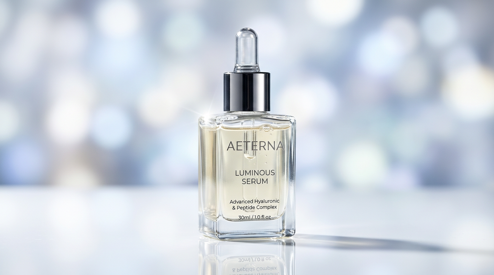
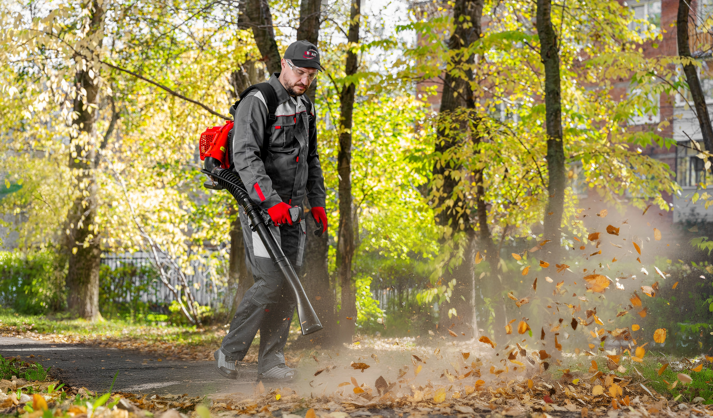

Кадр, который останавливает скролл
Предметная, репортажная и постановочная съёмка для рекламы, каталогов, сайтов и соцсетей — выстраиваем свет, сценарий и обработку так, чтобы кадр продавал без подписи.
Какую съёмку мы делаем
Подбираем формат, свет и команду под задачу — от карточки товара на маркетплейсе до имиджевой серии для сайта и презентаций
Предметная съёмка
Товары для каталогов, маркетплейсов и рекламы — свет и ракурс, после которых не нужно описывать преимущества словами.
Репортажная съёмка
Мероприятия, бэкстейдж и команда в работе — кадры, которые передают атмосферу и подходят для соцсетей в день съёмки.
Имиджевая и портретная съёмка
Лица бренда, спикеры и команда — кадры для сайта, презентаций и медиа, которым веришь с первого взгляда.
Съёмки для соцсетей
Пакеты контента под регулярный постинг — снимаем сразу сериями, чтобы хватило не на одну неделю публикаций.
Как выглядит наш подход к свету и кадру
Один взгляд — одно решение: вот три формата из портфолио, которые задают тон. Полные серии показываем на встрече или присылаем по запросу

Товар крупным планом
Свет и ракурс под конкретную площадку: карточка маркетплейса требует не того же, что баннер на сайте или афиша наружной рекламы.
Лицо бренда
Портреты команды и спикеров, которым веришь с первого взгляда — для сайта, презентаций и медиа компании.
Атмосфера в моменте
Снимаем так, чтобы кадр можно было опубликовать в день события — без потери настроения и с нужным светом даже в зале.

Например: каталожная серия для интернет-магазина
Десятки товарных позиций — единый свет, ракурс и цветокоррекция, чтобы карточки выглядели как одна продуманная система, а не набор случайных снимков с разных сессий. Снимаем сериями: чтобы хватило не на один сезон публикаций, а отбор и обработку берём на себя.
От референсов до готовой серии
Хорошая съёмка не начинается со вспышки камеры — она начинается с понимания, где и зачем кадр будет использован
Бриф и референсы
Собираем референсы и задачу: что должен почувствовать зритель, глядя на кадр, и где он его увидит.
Сценарий и свет
Продумываем локацию, свет и раскадровку заранее — чтобы на площадке снимать, а не придумывать на ходу.
Съёмка
Снимаем сериями и с разных точек — чтобы при отборе было из чего выбирать, а не «единственный вариант».
Цветокоррекция и ретушь
Обрабатываем кадры под фирменный стиль бренда и площадку публикации — от карточки маркетплейса до баннера наружной рекламы.
Что вы получаете
Не просто файлы на диске, а готовый к публикации набор — под конкретную площадку и формат
Для рекламы
и маркетплейсов
- Цветокоррекция и ретушь каждого кадра
- Форматы под площадки — Ozon, Wildberries, Avito и сайт
- Исходники в RAW по запросу
- Лицензия на коммерческое использование
Для соцсетей
и презентаций
- Горизонтальные, квадратные и вертикальные версии под все площадки
- Комплекты обложек и кадров для историй
- Подборки по сериям — чтобы хватило на регулярный постинг
- Быстрая сдача чернового отбора для согласования
Что говорят клиенты
Работаем с 2018 года — предметная, каталожная и event-съёмка для компаний по всей России
Мы впервые заказали ролик и нам очень повезло с первого раза встретить таких профессионалов! Очень хороший результат и по видео, и по фото. Оперативно, пунктуально и очень внимательно отнеслись к работе. Ребята помогли с композицией, с аксессуарами — результат просто прекрасен!

Ребята, очень благодарна вам за слаженную работу! Безумно комфортно и креативно — это супер важная часть! Видеоролик получился офигенный, спасибо что адекватно принимали критику и правки. Очень рада, что интуитивно среди трёх компаний выбрала именно вас!

Вы очень классные и отзывчивые ребята. Сделали всё очень оперативно и качественно. Ролик делали для ТВ — подогнали по всем техническим требованиям. Спасибо огромное! Рекомендуем.

Очень давно сотрудничаем и дружим с ребятами. Способны решить задачу любой сложности — и быстрый техничный монтаж, и комплексный проект со съёмкой в течение года.


То, что обычно спрашивают перед съёмкой
Если не нашли ответ на свой вопрос — напишите или позвоните, ответим в день обращения
Сколько стоит фотосессия?
Зависит от формата: предметная съёмка одной товарной линейки и репортаж с мероприятия на полдня считаются по-разному. Опишите задачу — пришлём смету с вариантами под разные бюджеты и сроки.
Сколько фотографий мы получим на выходе?
Договариваемся заранее и фиксируем в смете: отбираем и обрабатываем сильнейшие кадры из серии, а не отдаём всё подряд «как снято». Это и быстрее для вас, и честнее по качеству каждого кадра.
Снимаете в студии или на нашей площадке?
Предметную съёмку чаще делаем в студии — там проще контролировать свет и фон. Репортажную и имиджевую снимаем там, где работает ваш бизнес: офис, производство, заведение или площадка мероприятия.
В каких форматах вы передаёте готовые файлы?
JPEG в высоком разрешении, адаптированный под площадку — сайт, маркетплейс, печать, соцсети. RAW-исходники передаём по отдельной договорённости, если они нужны для вашей внутренней обработки.
Сколько ждать готовые фотографии после съёмки?
Черновой отбор присылаем в течение нескольких дней — чтобы вы могли согласовать направление обработки. Финальная серия в обработке готова обычно за 1–2 недели в зависимости от объёма.
Запланируем фотосессию?
Расскажите, для какой задачи нужны кадры — предложим формат, свет, локацию и команду под ваш бюджет.